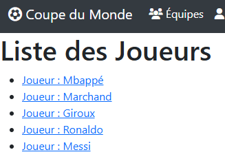

Présentation du projet
Grâce à un Dashboard, l'admin accède à des CRUDs de Joueur, But, Equipe et Rencontre. Un utilisateur classique peut consulter le nombre de buts pour une équipe ou pour un joueur et la liste de buts d'une rencontre.

Technologies et techniques utilisées
- Symfony nous a permis de créer les entités, leurs fixtures, les formulaires, les controllers, avec notamment la partie Dashboard Admin et les templates.
- Postgresql nous a permis de stocker les données du site.